| Most of the carbohydrates found in
nature occur as polysaccharides, polymers of high
molecular weight. Polysaccharides, also called glycans,
differ from each other in the identity of their recurring
monosaccharide units, in the length of their chains, in
the types of bonds linking the units, and in the degree
of branching. Homopolysaccharides contain only a single
type of monomeric unit; heteropolysaccharides contain two
or more different kinds of monomeric units (Fig. 11-13).
Some homopolysaccharides serve as storage forms of
monosaccharides used as fuels; starch and glycogen are
homopolysaccharides of this type. Other
homopolysaccharides (cellulose and chitin, for example)
serve as structural elements in plant cell walls and
animal exoskeletons. Heteropolysaccharides provide
extracellular support for organisms of all kingdoms. The
rigid layer of the bacterial cell envelope (the
peptidoglycan) is a heteropolysaccharide built from two
alternating monosaccharide units. In animal tissues, the
extracellular space is occupied by several types of
heteropolysaccharides, which form a matrix that holds
individual cells together and provides protection, shape,
and support to cells, tissues, or organs. Hyaluronic
acid, one of the polymers that accounts for the toughness
and flexibility of cartilage and tendon, typiiies this
group of extracellular polysaccharides. Other
heteropolysaccharides, sometimes in very large aggregates
with proteins (proteoglycans), account for the high
viscosity and lubricating properties of some
extracellular secretions. Unlike proteins, polysaccharides generally do not have definite molecular weights. This difference is a consequence of the mechanisms of assembly of the two types of polymers. Proteins are synthesized on a template (messenger RNA) of defmed sequence and length, by enzymes that copy the template exactly. For polysaccharide synthesis, there is no template; rather, the program for polysaccharide synthesis is intrinsic to the enzymes that catalyze the polymerization of monomeric units. For each type of monosaccharide to be added to the growing polymer there is a separate enzyme, and each enzyme acts only when the enzyme that inserts the preceding subunit has acted. The alternating action of several enzymes produces a polymer with a precisely repeating sequence, but the exact length varies from molecule to molecule, within a general size class. The mechanisms that set the upper size limits are unknown. |
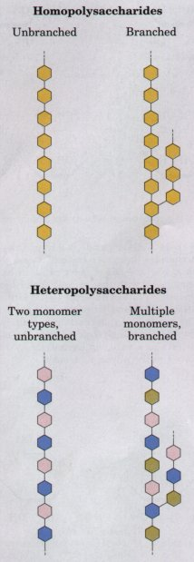 Figure 11-13 Polysaccharides may be composed of one, two, or several different monosaccharides, in straight or branched chains. |
The most important storage polysaccharides in nature are starch in plant cells and glycogen in animal cells. Both polysaccharides occur intracellularly as large clusters or granules (Fig. 11-14). Starch and glycogen molecules are heavily hydrated because they have many exposed hydroxyl groups available to hydrogen bond with water. Most plant cells have the ability to form starch, but it is especially abundant in tubers, such as potatoes, and in seeds, such as corn.
Starch contains two types of glucose polymer, amylose and amylopectin. The former consists of long, unbranched chains of D-glucose units connected by (α1→4) linkages (Fig. 11-15a). Such chains vary in molecular weight from a few thousand to 500,000. Amylopectin also has a high molecular weight (up to 1 million) but is highly branched (Fig. 11-15b). The glycosidic linkages joining successive glucose residues in amylopectin chains are (α1→4), but the branch points, occurring every 24 to 30 residues, are (α1→6) linkages (Fig. 11-15c).
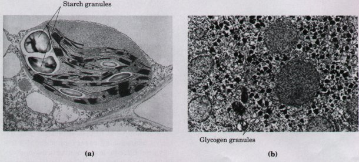
Figure 11-14 Electron micrographs of starch and glycogen granules. (a) Large starch granules in a single chloroplast. Starch is made from D-glucose formed photosynthetically.(b) Glycogen granules in a hepatocyte. These granules are much smaller (≈0.1 um) than the starch granules (≈1.0um).
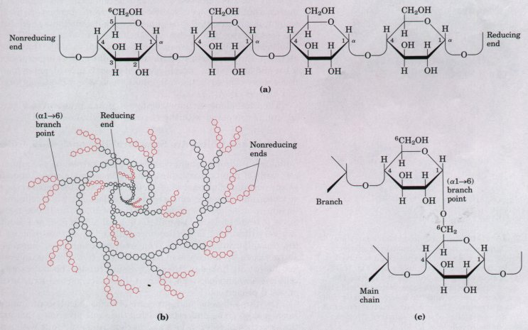
Figure 11-15 Amylose and amylopectin, the polysaccharides of starch. (a) Amylose, a linear polymer of D-glucose units in (α1→4) linkage. Each polymer chain can contain several thousand glucose residues. (b) Amylopectin. Each hexagon represents one glucose residue. The colored hexagons represent residues of the outer branches, which are removed enzymatically one at a time during the intracellular mobilization of starch for energy production. This diagram shows only a very small portion of a very long molecule. Glycogen has a similar structure but is more highly branched and more compact. (c) Structure of an (α→6) branch point. During starch breakdown, a separate enzyme is required to break the (α1→6) linkage.
| Glycogen is the main storage
polysaccharide of animal cells. Like amylopectin,
glycogen is a polymer of (α1→4)-linked subunits of
glucose, with (α1→6)-linked branches, but glycogen is
more extensively branched (branches occur every 8 to 12
residues) and more compact than starch. Glycogen is
especially abundant in the liver, where it may constitute
as much as 7% of the wet weight; it is also present in
skeletal muscle. In hepatocytes glycogen is found in
large granules (Fig. 11-14), which are themselves
clusters of smaller granules composed of single, highly
branched glycogen molecules with an average molecular
weight of several million. Such glycogen granules also
contain, in tightly bound form, the enzymes responsible
for the synthesis and degradation of glycogen. Because each branch in starch (Fig. 11-15b) and glycogen ends with a nonreducing sugar (one without a free anomeric carbon), these polymers have as many nonreducing ends as they have branches, but only one reducing end. When starch or glycogen is used as an energy source, glucose units are removed one at a time from the nonreducing ends. Because of the branching of amylopectin and glycogen, degradative enzymes (which act at nonreducing ends) can work simultaneously at many ends, speeding the conversion of the polymer to monosaccharides. Why not store glucose in its monomeric form? Liver and skeletal muscle contain glycogen equivalent to several percent of their wet weight, in an essentially insoluble form that contributes very little to the osmotic strength of the cytosol. If the cytosol were a 2% glucose solution (about 0.1 M), the osmolarity of the cell would be threateningly elevated. Furthermore, with an intracellular glucose concentration of 0.1 M and an external concentration of about 5 mM (in a mammal), the free-energy change for glucose uptake would be prohibitively large (recall Eqn 10-2). The three-dimensional structure of starch is shown in Figure 1116, and is compared with the structure of cellulose below. |
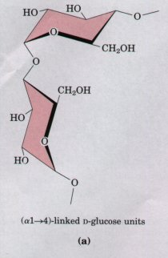 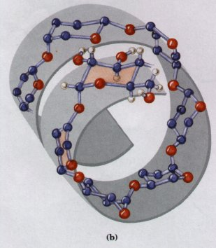 Figure 11-16 The structure of starch (amylose). (a) In the most stable conformation of adjacent rigid chairs, the polysaccharide chain is curved, rather than linear as in cellulose (see Fig. 11-17). (b) Scale drawing of a segment of amylose. The (α→4) linkages of amylose, amylopectin, and glycogen cause these polymers to assume a tightly coiled helical structure. This compact structure produces the dense granules of stored starch or glycogen seen in many cells (Fig. 11-14). |
Cellulose, a fibrous, tough, water-insoluble substance, is found in the cell walls of plants, particularly in stalks, stems, trunks, and all the woody portions of plant tissues. Cellulose constitutes much of the mass of wood, and cotton is almost pure cellulose. Because cellulose is a linear, unbranched homopolysaccharide of 10,000 to 15,000 D-glucose units, it resembles amylose and the main chains of glycogen. But there is a very important difference: in cellulose the glucose residues have the β configuration (Fig. 11-17a), whereas in amylose, amylopectin, and glycogen the glucose is in the a configuration. The glucose residues in cellulose are linked by (β1→4) glycosidic bonds. This difference gives cellulose and amylose very different three-dimensional structures and physical properties.
| The three-dimensional structure of carbohydrate-containing macromolecules can be understood using the same principles that explain the structure of polypeptides and nucleic acids: subunits with a moreor-less rigid structure dictated by covalent bonds form three-dimensional macromolecular structures that are stabilized by weak interactions. Because polysaccharides have so many hydroxyl groups, hydrogen bonding has an especially important influence on their structures. Polymers of β-D-glucose, such as cellulose, can be represented as a series of rigid pyranose rings in the chair conformation, connected by an oxygen atom bridging two carbon atoms (the glycosidic bond), about which there is free rotation (Fig. 11-17a). The most stable conformation for the polymer is that in which each chair is turned 180?relative to the preceding subunit, yielding a straight, extended chain. Several chains lying side by side can form the stabilizing network of inter- and intrachain hydrogen bonds shown in Figure 11-17b, resulting in straight, stable supramolecular fibers of great tensile strength. The tensile strength of cellulose has made it a useful substance to civilizations for millenia. Many manufactured products, including paper, cardboard, rayon, insulating tiles, and other packing and building materials, are derived from cellulose. | 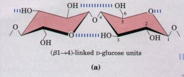 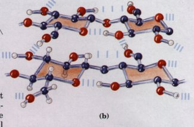 Figure 11-17 The structure of cellulose. (a) Part of a cellulose chain; the D-glucose units are in (β1→4) linkage. The rigid chair structures can rotate relative to one another. (b) Scale drawing of segments of two parallel cellulose chains, showing the actual conformation of the D-glucose residues and the hydrogen-bond cross-links. In the hexose unit at lower left, all hydrogen atoms are shown; in the other three hexose units all hydrogens attached to carbon have been omitted for clarity, as they do not participate in hydrogen bonding. |
In contrast to the straight fibers produced by (β1→4)-linked polymers such as cellulose, the most favorable conformation for (α1→4)linked polymers of D-glucose, such as starch and glycogen, is a tightly coiled helical structure stabilized by hydrogen bonds (Fig. 11-16).
Glycogen and starch ingested in the diet are hydrolyzed by α-amylases, enzymes in saliva and intestinal juice that break (α1→4) glycosidic bonds between glucose units. Cellulose cannot be used by most animals as a source of stored fuel, because the (β1→4) linkages of cellulose are not hydrolyzed by α-amylases. Termites readily digest cellulose (and therefore wood), but only because their intestinal tract harbors a symbiotic microorganism, Trichonympha, which secretes cellulase, an enzyme that hydrolyzes (β1→4) linkages between glucose units. Wood-rot fungi and bacteria also produce cellulase. The only vertebrates able to use cellulose as food are cattle and other ruminant animals (sheep, goats, camels, giraffes). The extra stomachs (rumens) of these animals teem with bacteria and protists that secrete cellulase.
Chitin is a linear homopolysaccharide composed of N-acetyl-D-glucosamine residues in β linkage (Fig. 11-18). The only chemical dif ference from cellulose is the replacement of a hydroxyl group at C-2 with an acetylated amino group. Chitin forms extended fibers similar to those of cellulose, and like cellulose is indigestible by vertebrate animals. Chitin is the principal component of the hard exoskeletons of nearly a million species of arthropods-insects, lobsters, and crabs, for example-and is probably the second most abundant polysaccharide, next to cellulose, in nature.
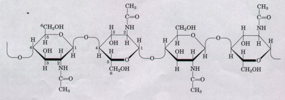 |
Figure 11-18 A short segment of chitin, a homopolymer of N-acetyl-D-glucosamine units in (β1→4) linkage. |
The rigid component of bacterial cell
walls is a heteropolymer of alternating
(β1→4)-linked N-acetylglucosamine and
N-acetylmuramic acid units (Fig. 11-19). Many such linear
polymers lie side by side in the cell wall, cross-linked
by short peptides, the exact structure of which depends
on the bacterial species (Fig. 11-19). The cross-linked
peptidoglycan is degraded by the enzyme lysozyme, which
hydrolyzes the glycosidic bond between
N-acetylglucosamine and N-acetylmuramic acid, killing
bacterial cells. Lysozyme is present in tears, presumably
a defense against bacterial infections of the eye. It is
also produced by certain bacterial viruses to ensure
their release from the host bacteria, an essential step
of the viral infection cycle.Glycosaminoglycans and Proteoglycans Are Components of the Extracellular MatrixThe extracellular space in animal tissues is filled with a gel-like material, the extracellular matrix, also called ground substance, which holds the cells of a tissue together and provides a porous pathway for the diffusion of nutrients and oxygen to individual cells. The extracellular matrix is composed of an interlocking meshwork of heteropolysaccharides and fibrous proteins. The heteropolysaccharides, called glycosaminoglycans, are a family of linear polymers composed of repeating disaccharide units (Fig. 11-20). One of the two monosaccharides is always either N-acetylglucosamine or N-acetylgalactosamine; the other is in most cases a uronic acid, usually glucuronic acid. In some glycosaminoglycans, one or more of the hydroxyls of the amino sugar is esterified with sulfate. The combination of these sulfate groups and the carboxylate groups of the uronic acid residues gives the glycosaminoglycans a very high density of negative charge. To minimize the repulsive forces among neighboring charged groups, these molecules assume an extended conformation in solution. One consequence of this extended conformation is the very high viscosity of solutions of these long, thin molecules. Glycosaminoglycans are attached to extracellular proteins to form proteoglycans (discussed below), enormous aggregates in which the polysaccharide makes up most of the mass, often 95% or more. |
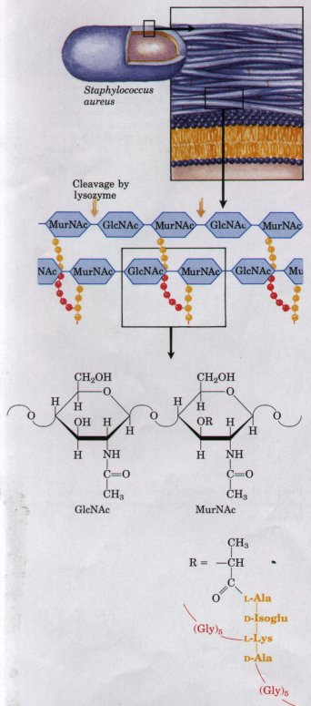 Figure 11-19 The peptidoglycan of the cell wall of the gram-positive bacterium Staphylococcus aureus. Peptides (red and yellow) attached to N-acetylmuramic acid units in two neighboring chains covalently link the polymers. Note the mixture of L and D amino acids in the peptides. Isoglu represents isoglutamate, in which the side chain carboxyl group, not the carboxyl at C-1, is involved in a peptide bond. |
| The glycosaminoglycan hyaluronic acid
(hyaluronate at physiological pH) of the extracellular
matrix of animal tissues contains alternating units of
D-glucuronic acid and N-acetylglucosamine (Fig. 11-20).
Hyaluronates have molecular weights greater than 1
million; they form clear, highly viscous solutions, which
serve as lubricants in the synovial fluid of joints, and
give the vitreous humor of the vertebrate eye its
jellylike consistency. Hyaluronate is also a central
component of the extracellular matrix of cartilage and
tendons, to which it contributes tensile strength and
elasticity. Hyaluronidase, an enzyme secreted by some
pathogenic (disease-causing) bacteria, can hydrolyze the
glycosidic linkages of hyaluronate, rendering tissues
more susceptible to invasion by the bacteria. A similar
enzyme in sperm hydrolyzes an outer glycosaminoglycan
coat around the ovum of many organisms, allowing sperm
penetration. Proteoglycans (Fig. 11-21) are composed of a very long strand of hyaluronate to which numerous molecules of core protein are bound noncovalently, at about 40 nm intervals. Each core protein is bound covalently to many shorter glycosaminoglycan molecules, such as chondroitin sulfate, keratan sulfate (Fig. 11-20), heparan sulfate, and dermatan sulfate. The covalent attachments between glycosaminoglycans and core protein are glycosidic bonds between sugar residues and the hydroxyl groups of Ser residues in the protein. A typical proteoglycan in human cartilage contains about 150 polysaccharide chains (each of Mr ≈20,000) covalently bound as side chains to each core protein. When a hundred or more of these "decorated" core proteins bind a single, extended molecule of hyaluronate, the resulting proteoglycan and its associated water of hydration occupy a volume about equal to that of an entire bacterial cell! |
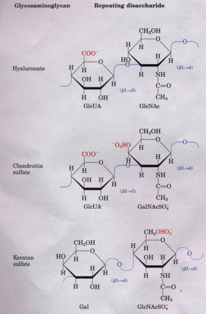 Figure 11-20 Some of the common heteropolysaccharide (glycosaminoglycan) components of extracellular matrix. The ionized carboxylate and sulfate groups give these polymers their characteristic high negative charge. |
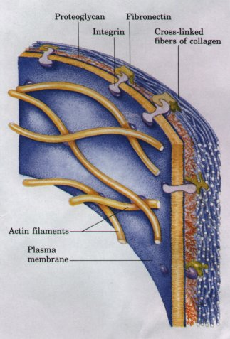 Figure 11-22 The association between cells and the proteoglycan of extracellular matrix is mediated by a membrane protein (integrin) and an extracellular protein (fibronectin in this example) with binding sites for both integrin and the proteoglycan. Note the close association of collagen fibers with the fibronectin and proteoglycan. |
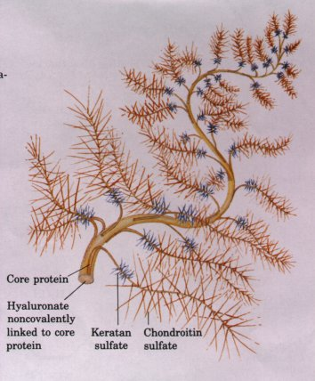 Figure 11-21 A proteoglycan aggregate. A single long molecule of hyaluronate is associated noncovalently with many molecules of core protein, each containing covalently bound chondroitin sulfate and keratan sulfate. |
Interwoven with these enormous extracellular proteoglycans are fibrous proteins such as collagen and elastin, which form a cross-linked meshwork that gives the whole extracellular matrix strength and resiliency. (See also Table 7-1.)
The attachment of cells to the extracellular meshwork involves several families of proteins. The extracellular domains of certain integral membrane proteins (integrins) have binding sites for another family of adhesion proteins (including fibronectin and laminin), that bind to proteoglycans (Fig. 11-22). It is likely that this complex system of binding proteins serves not merely to anchor cells to the extracellular matrix, but also to direct the migration of cells in developing tissue along paths determined by the organization of the extracellular matrix.
Table 11-2 summarizes the composition, properties, and occurrence of the polysaccharides described in this section.
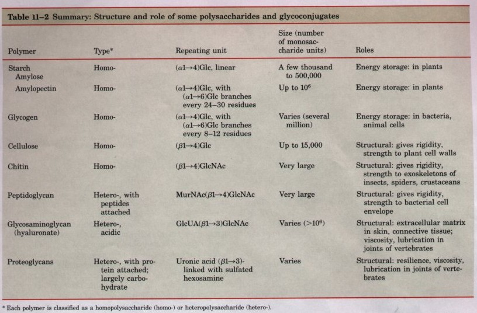